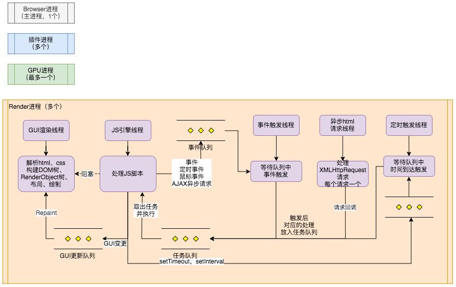

浏览器多进程模型
多进程模型
目前浏览器主要采用多进程的模型，采用多进程模型的好处：
1、避免单个page crash影响整个浏览器
2、避免第三方插件crash影响整个浏览器
3、充分利用多核浏览器的优势
4、方便利用沙盒模型隔离插件等进程、提高浏览器稳定性
主要进程
1、第三方插件进程
每种类型的插件对应一个进程、仅当使用该插件时才创建
2、GPU进程
最多一个，用户3D绘制
3、Renderer进程
页面渲染、脚本执行、时间处理等。默认每个TAB页面一个仅，互不影响。
4、Browser进程
浏览器的主要进程，负责协调、主控；负责浏览器界面显示，与用户交互，如前进后退；负责各个页面的管理、创建和销毁其它进程；将Renderer进程得到的内存中的Bitmap绘制到用户界面上；网络资源是管理、下载等。
以chrome为例：
1168 1 Google Chrome
1173 1 chrome_crashpad_handler --monitor-self-annotation=ptype=crashpad-handler
1176 1168 Google Chrome Helper (GPU).app/Contents/MacOS/Google Chrome Helper (GPU) --type=gpu-process
1177 1168 Google Chrome Helper.app/Contents/MacOS/Google Chrome Helper --type=utility
1668 1168 Google Chrome Helper.app/Contents/MacOS/Google Chrome Helper --type=utility
4321 1168 Google Chrome Helper (Renderer).app/Contents/MacOS/Google Chrome Helper (Renderer) --type=renderer
4369 1168 Google Chrome Helper (Renderer).app/Contents/MacOS/Google Chrome Helper (Renderer) --type=renderer
4370 1168 Google Chrome Helper (Renderer).app/Contents/MacOS/Google Chrome Helper (Renderer) --type=renderer
4372 1168 Google Chrome Helper (Renderer).app/Contents/MacOS/Google Chrome Helper (Renderer) --type=renderer
1183 1168 Google Chrome Helper (Renderer).app/Contents/MacOS/Google Chrome Helper (Renderer) --type=renderer
1168进程应该是Browser主进程。
1173进程是chrome_crashpad_handler，看名字应该是用来应对chrome异常crash后的处理进程。
1177和1668进程是utility进程，有时候Chromium浏览器主进程需要做一些“危险”的事情，比如图片解码、文件解压缩。如果这些“危险”的操作发生了失败，会导致整个主进程发生异常崩溃，这是我们不愿意看到的。因此Chromium设计出了一个utility进程的机制。主进程临时需要做一些不方便的任务的情况下，可以启动一个utility进程来代替主进程执行，主进程与utility进程之间通过IPC消息来通信。
4369等Renderer进程，有可能是插件进程也有可能是TAB页进程。

Renderer进程
我们说JS是单线程的，并不是代表一个页面只有一个线程。Renderer进程包含：GUI渲染线程、JS引擎线程、事件触发线程、异步html请求线程、定时触发线程。
GUI渲染线程
- 负责渲染浏览器界面，解析html、css，构建DOM树和RenderObject树，布局和绘制等
- 当界面需要重绘（Repaint）或由于某种操作引发回流（reflow）时，该线程就会执行
- 和JS引擎线程互斥，当JS引擎线程执行时GUI线程会被挂起，GUI更新会被保存在一个队列中等到JS引擎空闲时立刻执行
JS引擎线程
- 负责处理javascript脚本程序
- 浏览器无论什么时候都只有一个JS线程在运行JS程序
- 和GUI线程互斥，所以如果JS执行时间过长，就造成页面的渲染不连贯，导致页面渲染加载阻塞
- 等待任务队列中任务的到来，然后加以处理
事件触发线程
- 当JS引擎执行代码块如setTimeOut时（也可来自浏览器内核的其它线程，如鼠标点击、AJAX异步请求等），会将任务添加到事件线程中
- 当对应事件的触发条件符合时，该线程会把事件添加到待处理队列的队尾，等待JS引擎的处理
- 由于JS的单线程关系，所以这些待处理队列中的事件都得排队等待JS引擎处理
异步HTML请求线程
- 在XMLHttpRequest连接后是通过浏览器新开的一个线程请求
- 检查状态变更，如果设置有回调函数，异步线程就产生状态变更事件，将回调放到事件队列中，由JS引擎执行
定时触发线程
- setInterval和setTimeout所在的线程
- 浏览器定时计数器不是由JavaScript引擎计数的